Hi, I'm
Amith
Polineni
I'm a mechanical engineering student at UVA. I make rovers that'll go to other planets. Last summer I was at NASA headquarters.
ADMIT ONE COFFEE CHAT Book a chat with me. In person at UVA or virtually, choose a time, and I'll see you there. Go to booking calenarMove your mouse around. A little robot is going to lead the way, same trick as my stroller. Click to drop cones and watch it dodge. Esc turns it off, Space clears the cones.
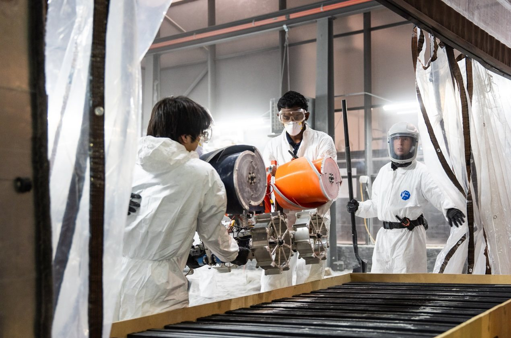
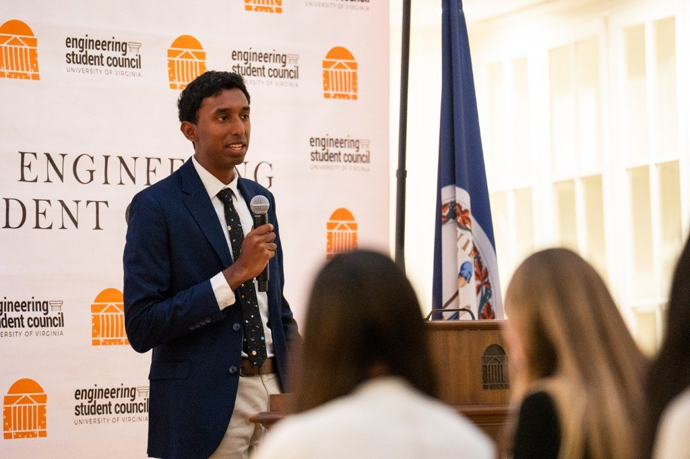
01 · NASA HEADQUARTERS · SUMMER 2026
I organized a space agency's processes.
As an OSTEM intern in the division that holds human spaceflight together, I owned one deliverable from first inventory to final demo: a single searchable handbook for 24 mission-support processes across 6 categories.
Halfway through, two organizations (SOMD and ESDMD) merged and the client changed under me. So the handbook stopped being a reference and became a tool for lining processes up.
- 9 weeks inventory, SME interviews, UX mockups, build, refactor
- 4 milestone reviews, with a demo each
- Refactored so new processes drop in without breaking anything
Outside the handbook: inside Mission Control, the Neutral Buoyancy Lab and HERA at JSC, the Artemis III crew announcement, four days at the NASA booth at the Great American State Fair, and the Silver Snoopy Awards.
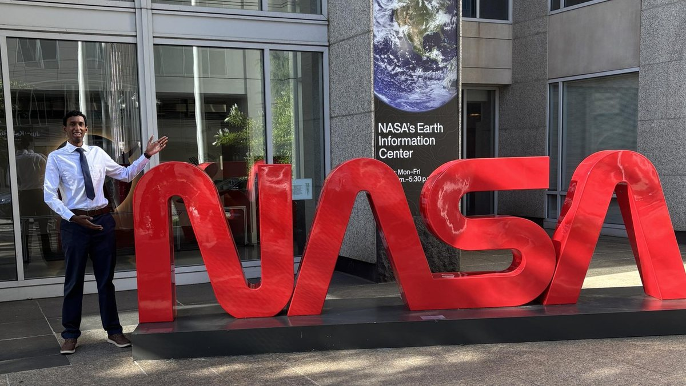
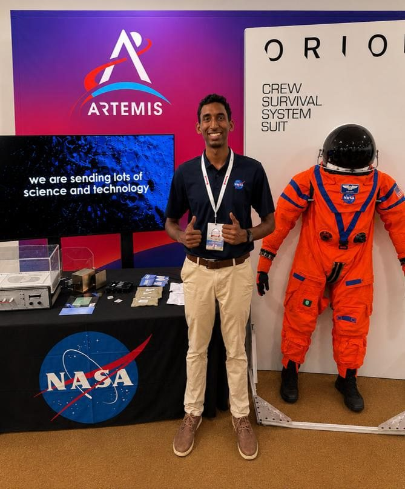
More from the summer
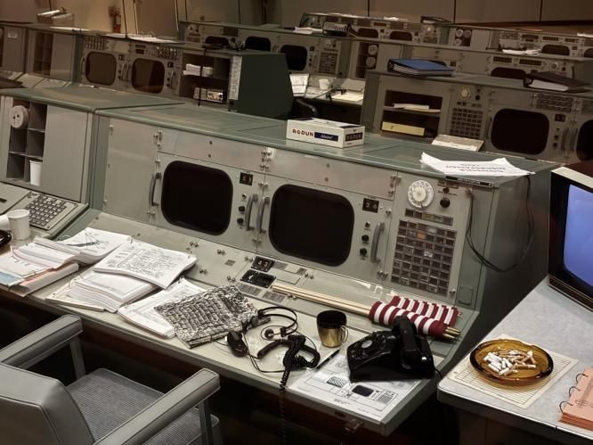
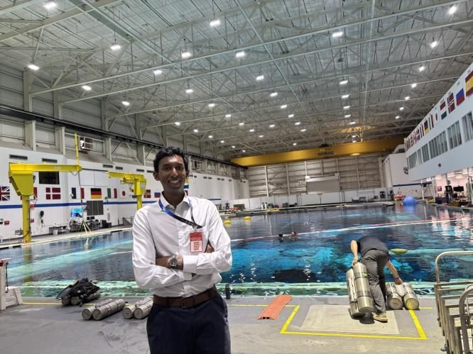
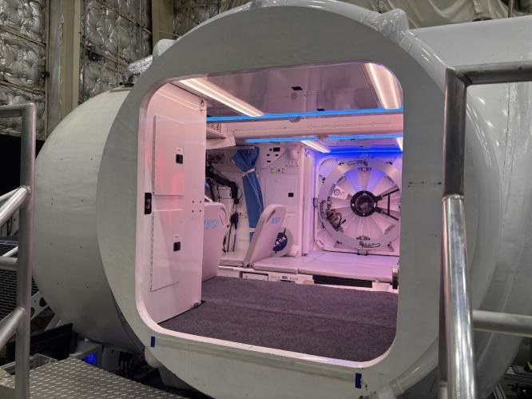
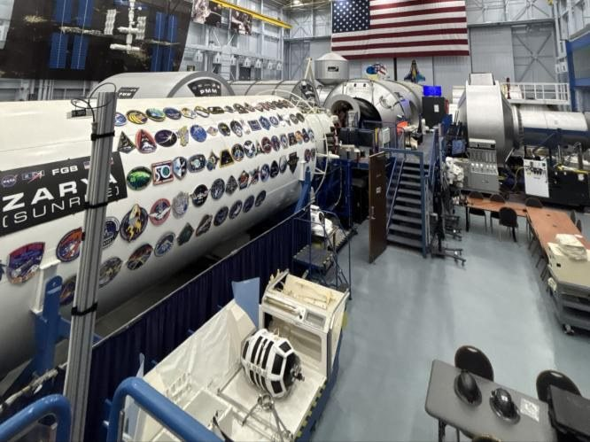
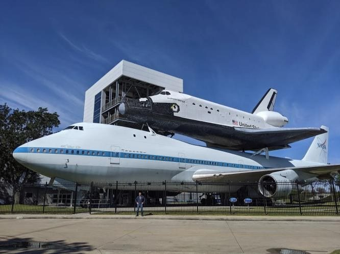
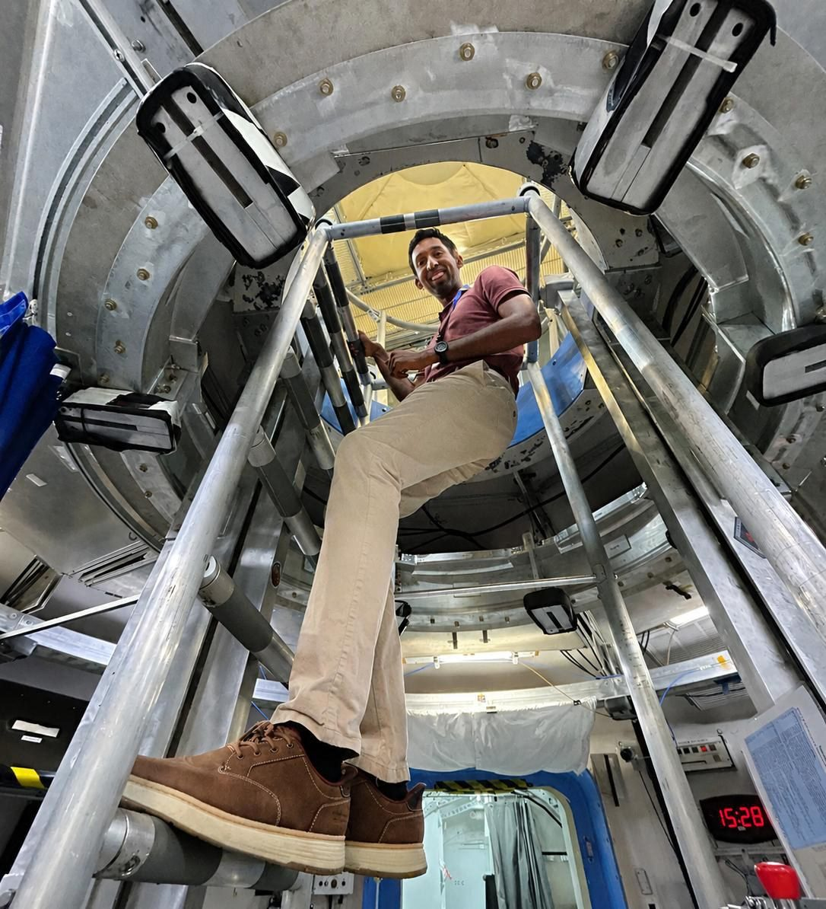
02 · VICTOR ROBOTICS LAB, UVA
A stroller that runs ahead of you.
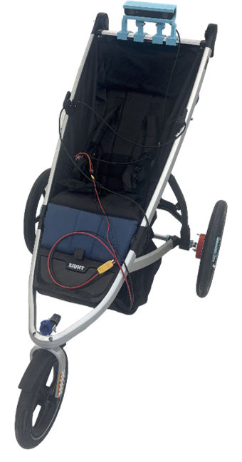
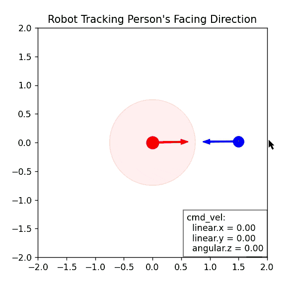
This is a robotic stroller that drives itself outdoors, with one twist: it leads instead of following. Most follow-bots trail behind you. This one stays out front at jogging speed, so you can always see it, it's easier to trust, and it can clear a path through a crowd. It works out where you're headed by reading your body pose, before you've even taken the step. The little robot chasing your cursor on this page is the same idea in miniature.
It tracks your shoulders, takes a vector straight out of your chest, and plans a path along it, bending around obstacles with a safety bubble around you. The bubble and arrow on the page are the real thing, scaled down.
- 1.5 to 2 m lead at running speed
- ZED stereo + Ouster LiDAR + ROS for SLAM and obstacle avoidance
- Reinforced gearbox and steering: 3D-printed bracing, planetary-geared steering motor
- 24 V / 14.8 V / 5 V rails off a 6S LiPo, with a hardware e-stop
03 · MARS ROBOTICS · NASA LUNABOTICS · 2025 + 2026
First Place LunaboticsRobot
Two robots, two years, two Innovation Awards. In 2025 I was a design lead on Artie, a bucket-drum excavator, which took 5th of 70 teams. The next year I was Vice President and design lead of a 105-member team, and I led the mechanical design of Bruno, a dual-drum excavator, to 1st overall and the Off-World Grand Prize at NASA Lunabotics.
Only one constraint carried over: the bucket drum. Everything else I derived from what had held Artie back.
- Two pairs of small drums instead of one big one. Lower, wider mass, so it can drive craters aggressively
- 56 inch cutting edge, about 5x Artie's, with each arm lowering independently
- 35 kg or less target mass (Artie was 43.5 kg), picked from a scoring analysis
- Prototype three months early from scrap stock. The chassis and arms made it to competition
Six awards at Kennedy Space Center. 5th place to 1st in a single year.
Designed around the clock
A lunar excavation robot is a timing problem as much as a mechanical one. Bruno runs a four-phase cycle: dig 60 s, drive 60 s, dump 60 s, drive back 60 s. Four cycles fit in a 15-minute run.
The decision that mattered most: raise the arms while driving. They need about 20 s to lift, so they rise during the drive across the obstacle zone and save 20 s every cycle. Step through it.
- 170+ L of regolith in a simulated 15-minute run, on only 23.7 Wh
- ~11 L/min against a 6 L/min target
- ~95 W average draw against a 180 W budget
- Static, bidirectional drums: spin one way to dig, reverse to dump and build the berm
The wheel fell off. We still won.
Bruno won the qualifier at UCF with almost 50% more points than second place. Then, in the first run at Kennedy Space Center, a wheel failed and came off mid-run.
Bruno has a hidden trick. Lower the drums until the wheels lift off the ground, spin both sets the same direction, and the drums become the drivetrain. We had practiced it before leaving Charlottesville. Bruno kept moving and scoring for the rest of the run.
Re-built in one night: the mechanical manufacturing and assembly of the sealed electronics box, with every part labeled so Bruno could come apart for the 800-mile drive to Florida and be rebuilt, rewired and verified in one night.
The takeaway I'd defend in any design review: build for the failure you did not predict, and practice recovering from it.
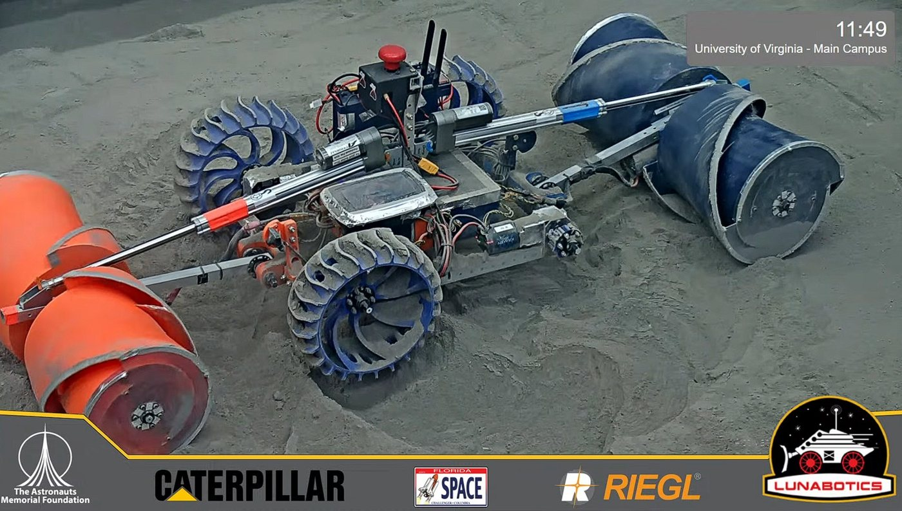
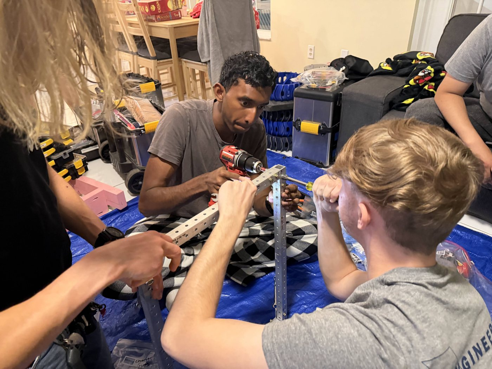
Year one: Artie
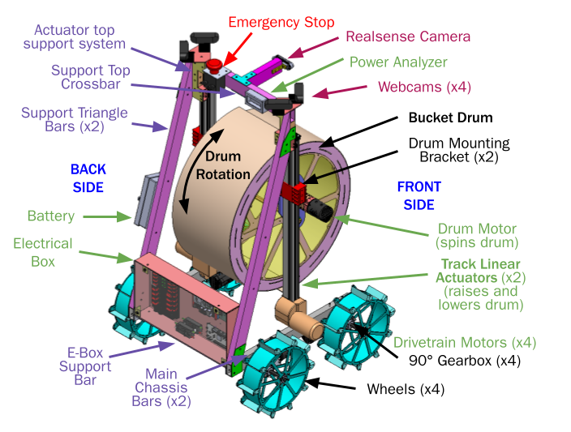
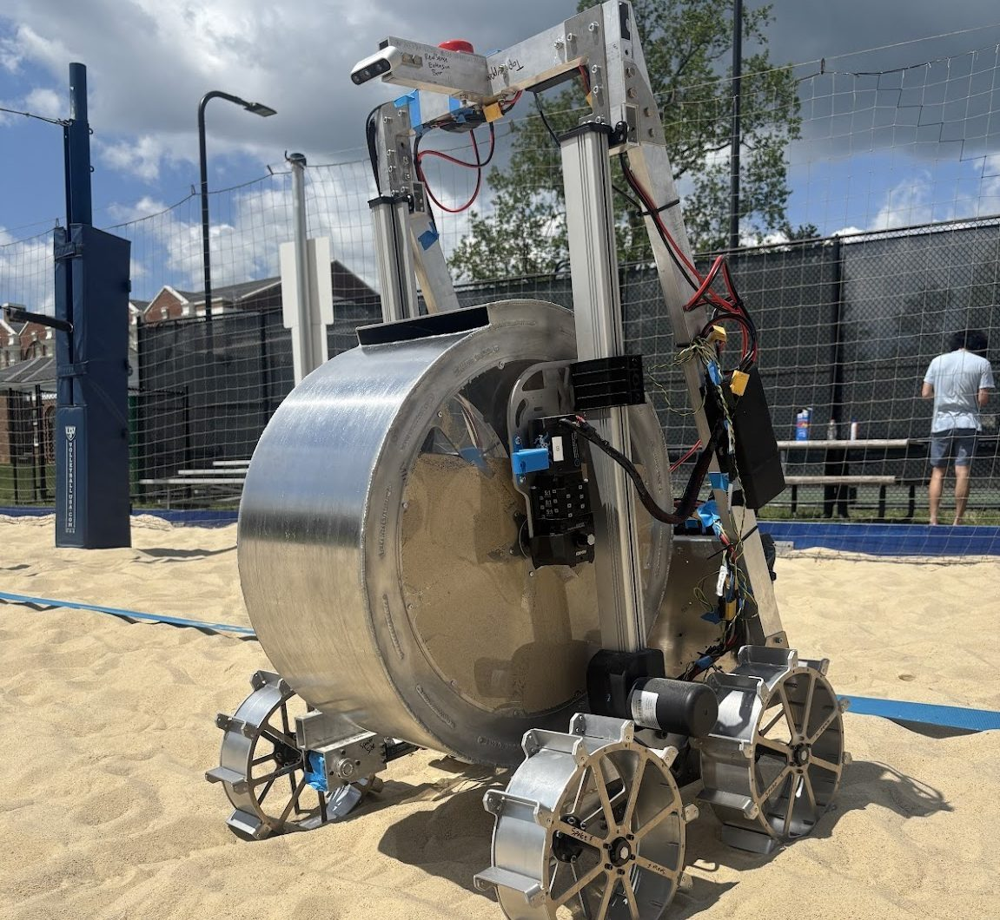
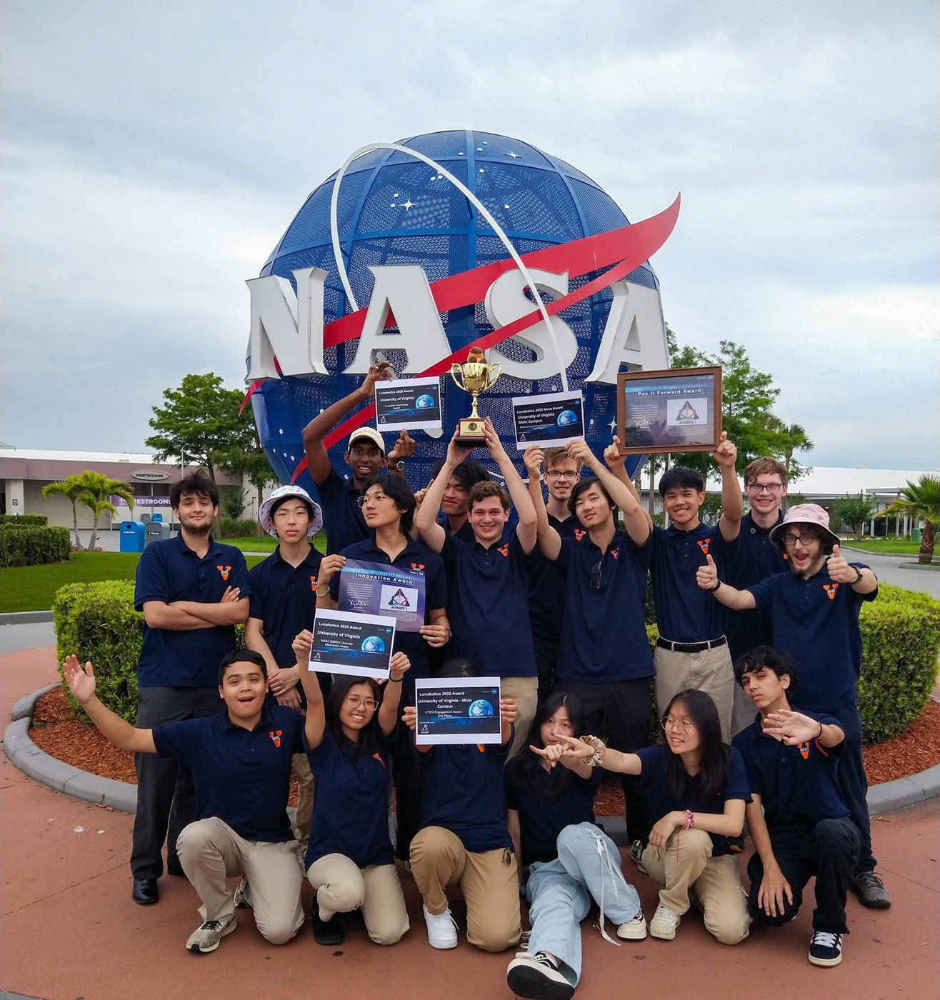
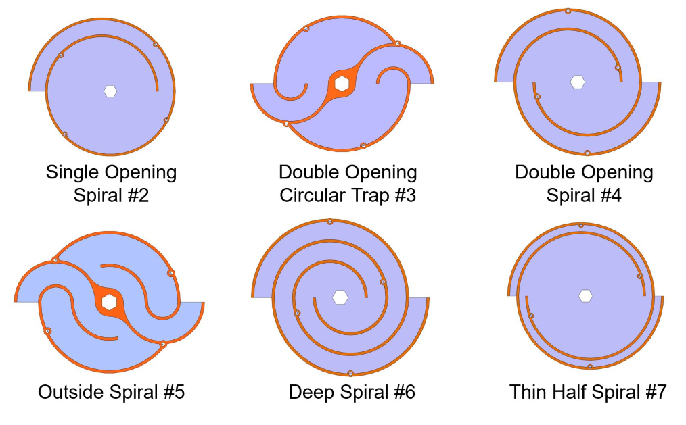
I was a mechanical design lead on Artie, a bucket-drum excavator. The concept was a radical one for the team, and after multiple design reviews and trade studies it was chosen as the official robot design. Artie placed 5th of 70 teams and won its first Innovation Award, and the next year I stepped up to VP.
- 3D-printed subscale drums in single-spiral, double-spiral and circular-trap geometries to watch regolith flow
- Half full turned out to be the practical fill limit, which set the final drum
- Belt-and-pulley swapped for direct drive through a bevel gearbox after field testing showed the torque demand
04 · IOT + MECHANICAL
A farm that ran itself for 10 weeks.
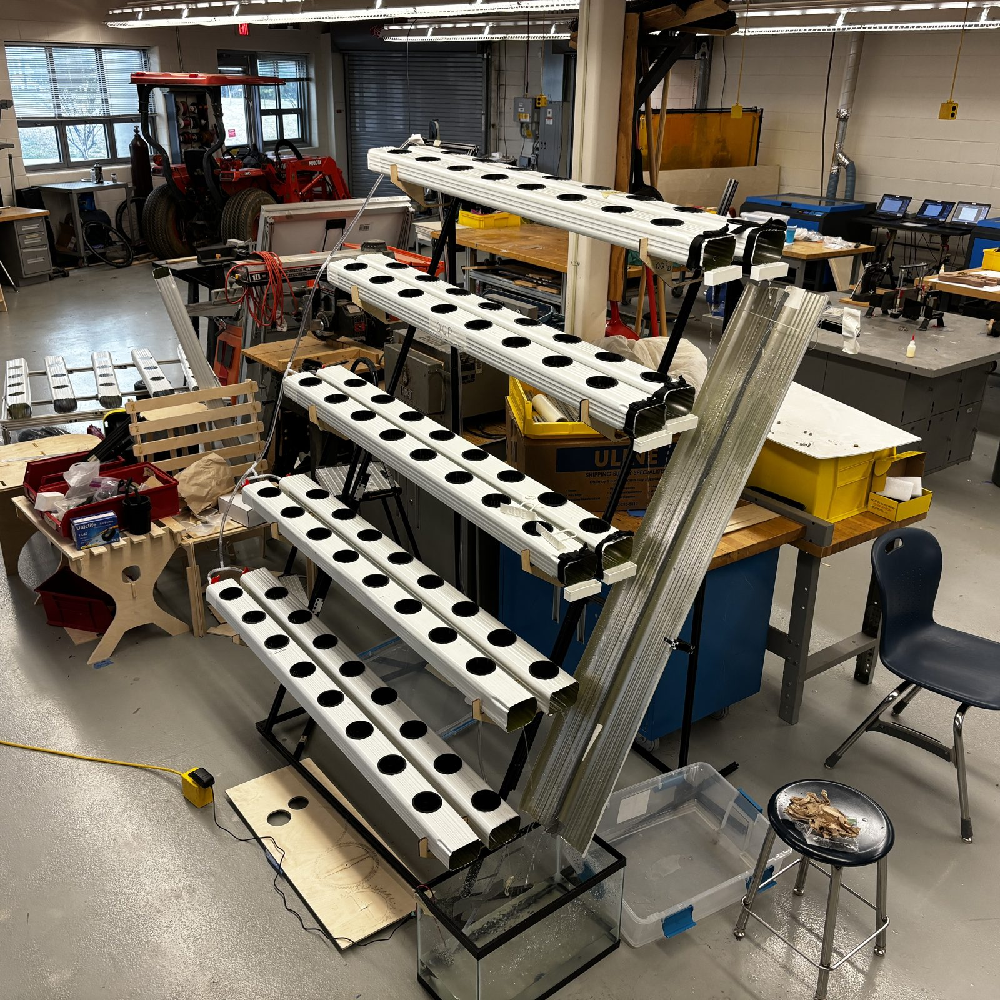
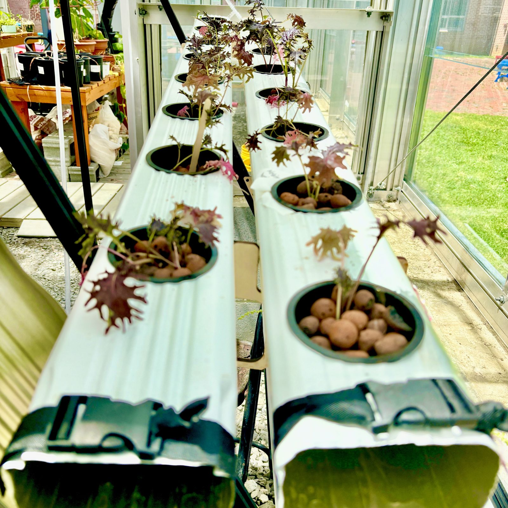
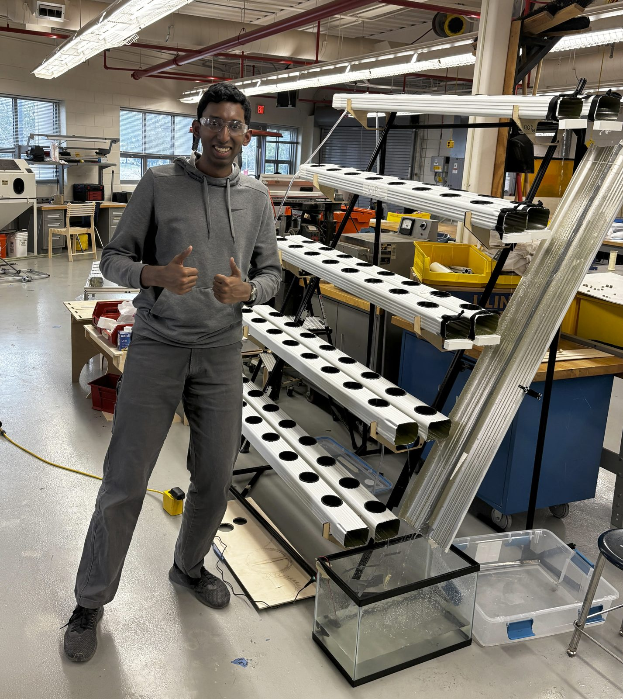
An aquaponics vertical farm with a Raspberry Pi in charge: pump on from 7 am to 7 pm, grow lights on a schedule, temperature and humidity streamed to a web page, and an email if it ever lost its connection.
- 10 weeks autonomous, growing kale, lettuce, chard and spinach
- 8 channels built of 10 designed, on 2020 aluminum
- 3 x 4 in downpipes tilted at 7°, with barb valves to share the flow
- 80% cheaper thanks to prototyping and low-cost parts
Side quests
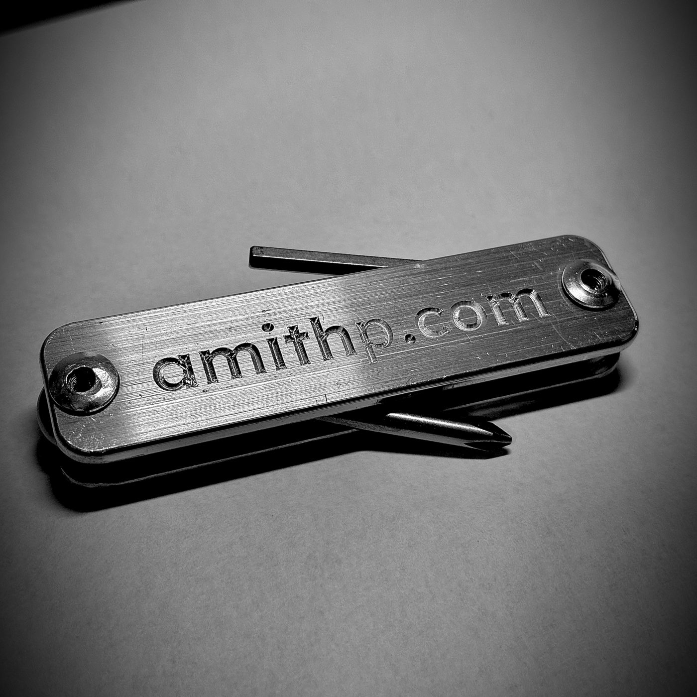
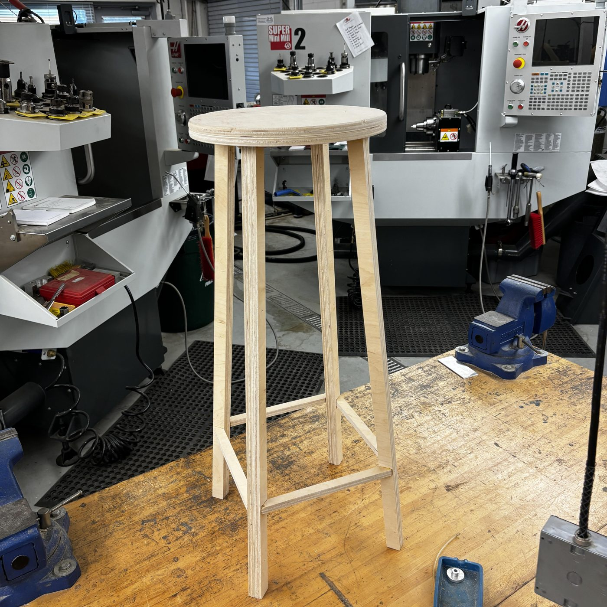
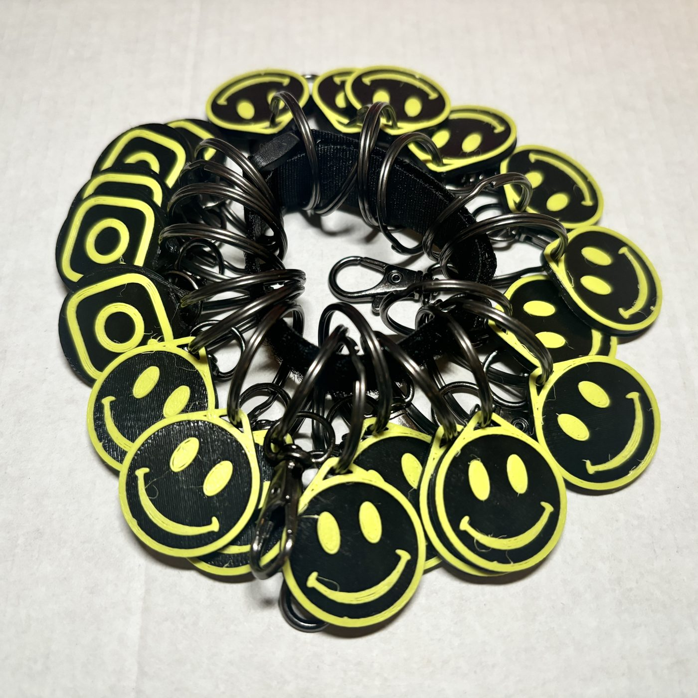